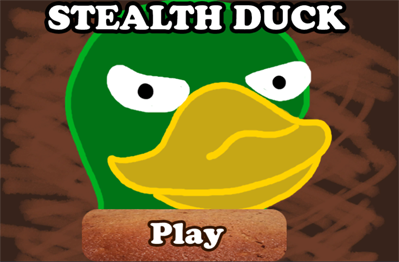
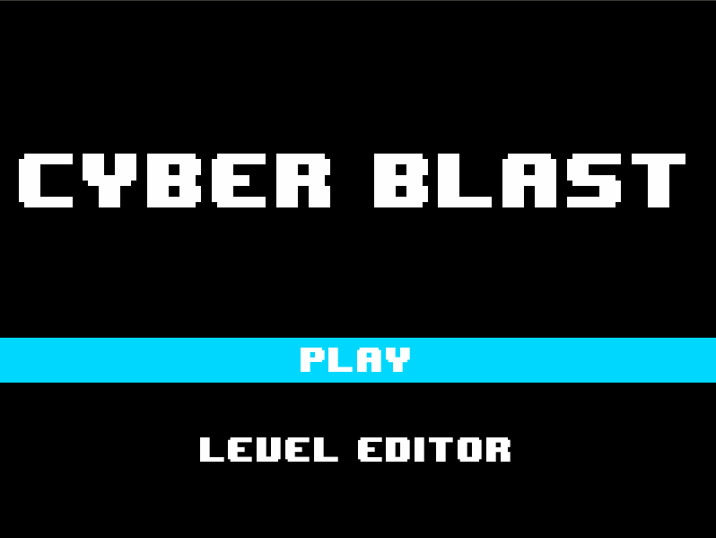
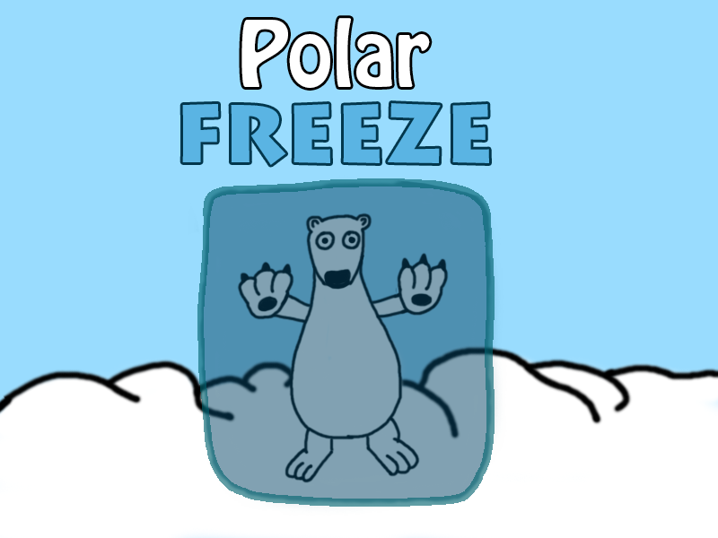
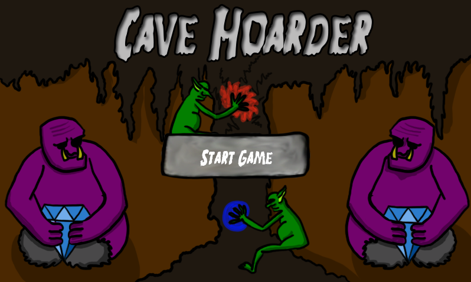
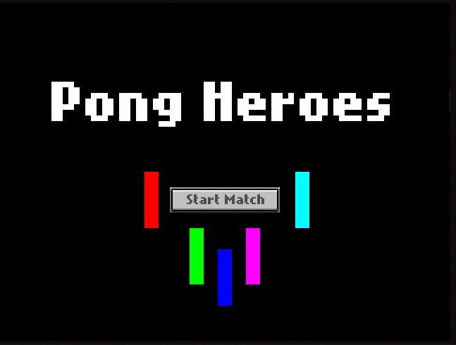

Stealth Duck
August 2014

My fifth game. Made in Unity. A stealth game where you play as a duck trying to steal bread and escape whilst avoiding guards
Play in Unity WebplayerAugust 2014

My fifth game. Made in Unity. A stealth game where you play as a duck trying to steal bread and escape whilst avoiding guards
Play in Unity WebplayerFebruary 2014

My fourth game. Made using Java and Libgdx. An attempt at copying the "Bomberman" arena battler formula. Drop bombs and destory everyone else. Requires 4 Xbox 360 controllers to play
Download JarDecember 2013

My third game. Made using Java and Libgdx. A simple platformer where you play as a polar bear trying to get home. Avoid dangerous heat detectors by freezing yourself and sliding past them.
Download JarSeptember 2013

My second game. Made using Java and the Libgdx framework. A two player turn based game where each player controls a gem hungry troll and their goblin minion. Carve a path to the gems scattered around the cave before your opponent can reach them by destroying the dirt in your way or by creating new dirt blocks to walk on.
Download JarDecember 2012

My first game. Made using Flash and flixel. A classic game of pong, but now with 5 characters with different powers! Make your pong bad jump, stretch, stick, shoot and block. Play local multiplayer or against the computer.
Play on Newgrounds